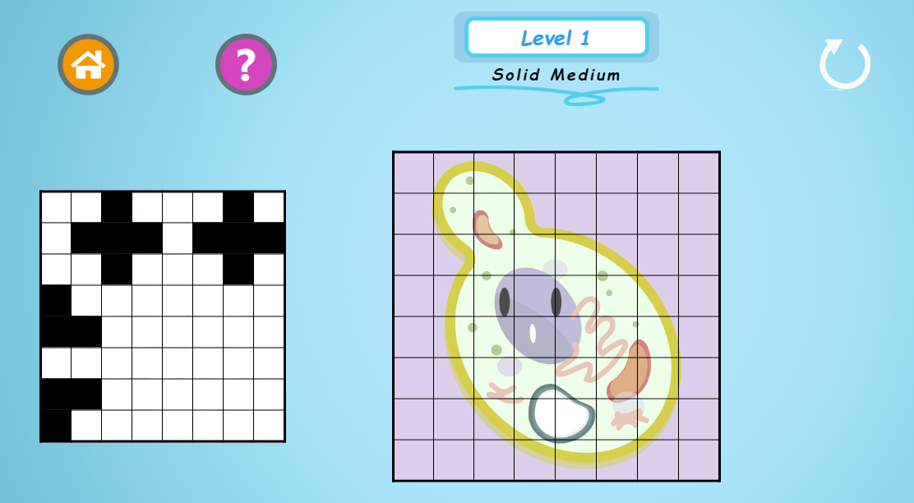
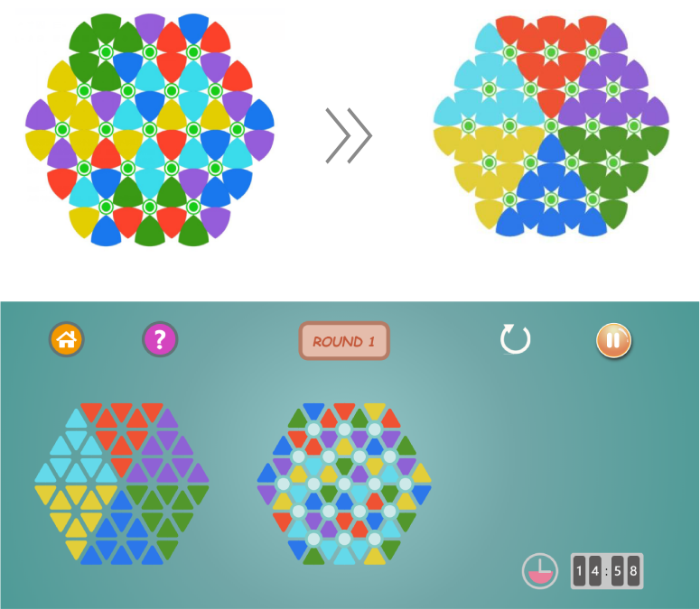
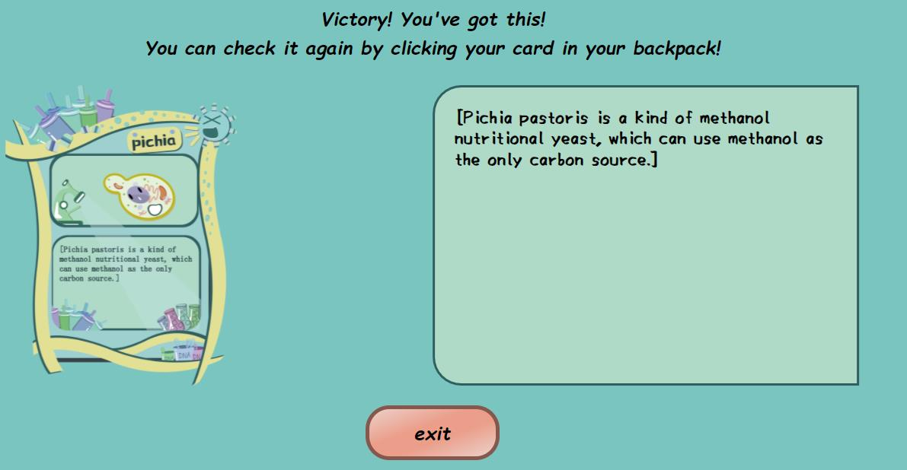
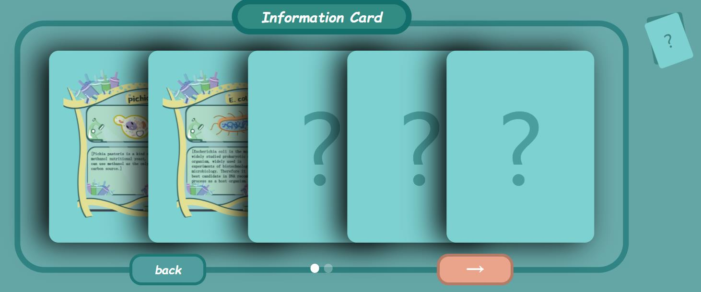
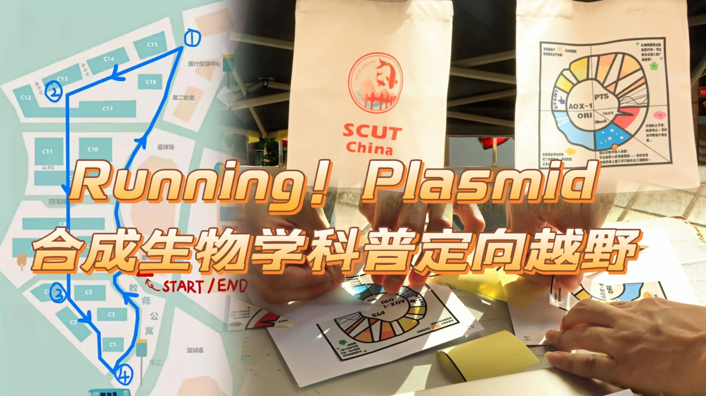

Professors and Advisors
OverviewSynthetic biology opens a field of possibilities to solve many issues encountered in society. However, it remains poorly known by most of the population and therefore not yet sufficiently explored. For example, synthetic biology is little exploited in the dyeing industry, although the opportunities are huge. We have observed that this is mostly due to a lack of information and communication on the subject.
Professor Yin Lin is our primary PI who majors in enzymology and fermentation engineering. At the beginning of our project design, it was professor Lin who inspired us to refer to dyes in the dyeing of silk. She also provided us with broader ideas, such as applying pigments to scenes such as wall paint and hair dye. So far, SCUT-China have set up several offline or online meetings with Prof. Lin, during which we made presentation on our ideas and progress, meanwhile exchanging opinion with each other. Besides, the experiment and part of the modelling are guided by the students from her laboratory. Understanding that we were having problems with directed evolution, Prof. Lin also further supported us the meeting with Biocreatech, a local company studying the directed evolution of enzymes.


Professor Jianwen Ye is our secondary PI who majors in cell manufacture. So far, we have set up several offline meetings with Prof. Ye. According to his advice, we proposed and processed the idea of light-induced system, which fully improved the gene circuit, regulated the manufacturing, and further completed our project. At the same time, Prof. Ye gave very important guidance on our team's modeling work, and based on his advice, we clarified the direction of our modeling work going forward. Besides, the experiment and project design are also guided by PhDs from Ye's lab.
On May 8, we met professor Suiping Zheng, who majors in fermentation engineering, have carried out several offline meetings and offered other help for us. He mainly made suggestions on the regulation between lycopene and patchoulol, and questioned about the feasibility of plate screening. According to professor Zheng's advice, we promoted the experiment method and further renewed the whole project. Through his previous experience in constructing the metabolic model, professor Zheng also provided adequate advice and conceive on modelling part. As he suggested, the flux balance analysis could not work well when the kinetic data was mostly inaccessible, and the genome-scale model should be made much more sufficient use of. We then renewed the model based on his advice.
On July 8, we met professor Shuangyan Han majors in enzymology and fermentation engineering. During the meeting with us, professor Han mainly focused on the implementation plan, especially the antisepsis property of the Funcdyes. As is stressed, the content of lycopene and patchoulol, and the ratio between them should be carefully testified based on the customer survey. Since the patchoulol may smell like the herb, it is essential to maintain its concentration so that the product can both inhibit the growth of microbes and make the user feel comfortable. She also questioned on the availability in the modelling of light-induced system, which inspired us to promote our project and stress the correlation among all the modules.
On August 23, we communicated with assistant professors Xiaofeng Yang and Yanrui Ye on Funcdyes. The two assistant professors rearranged our experimental logic and pointed out that our wet-lab was relatively fragmented and did not serve our project well.
In addition, as for the downstream application of the project, since lycopene is widely used in the food and cosmetics industry, Professor Yang believed that we could expand the application of lycopene to the cosmetics field, such as the production of lipstick, to better show the effect of terpenoid dyes.
On September 21, we demonstrated our project and communicated with Prof. Liang Shuli of the laboratory. Prof. Liang first pointed out the design problem of our slides. He believed that a good slide should be well understood even without explanation. We took Professor Liang's suggestion and added more text and illustrations to our defense slides.
In addition, as for our experimental data, Prof. Liang recognized the data of our fermentation experiment on the one hand, but on the other hand, Prof. Liang believed that our data processing should be optimized according to our experimental design, and abnormal data should be analyzed and discarded. Professor Liang's suggestion inspired us very well, and we further optimized the experimental data of fermentation.
Guangjuan Luo is our instructor from Prof. Lin's lab. She provides full guidance for the designing of the gene circuit, the product implementation, and the planning of project schedule. The experiment is majorly instructed by her, and we also learn a lot about the safety rule in our laboratory. Through the discuss with Luo, we developed a visualization method combining with plate screening.


Xinying Zhang is one of our advisors who majors in the manufacturing of lycopene. She constantly provides guidance for the experimental operation. Besides, we also discuss on the implementation of FUNCDYES. As is emphasized by Zhang, a strain for lycopene should be adapted since the co-expression may lead to the decrease of both products. Zhang provided us with 2OZPP, the more-high-yield strain, and we eventually obtained a positive result.
Yue Huang is one of our advisors who majors in the manufacturing of antimicrobial peptides. Knowing that we hope to verify the antisepsis effect of patchoulol as a dye through experiments, he introduced several experimental schemes for the antibacterial properties of common products. As a hydrophobic molecule, the experimental protocol used in liquid culture is not applicable. Therefore, we eventually intend to use a solid plate to carry out MIC experiments. In the investigation process of relevant literature, we found that some researchers had conducted similar experiments and obtained good experimental results, which confirmed the antibacterial performance of patchoulol, so we did not repeat the experiment. His guidance on inhibition experiments helped us to quickly determine the inhibition properties of patchoulol.

Apart from above, we have made contacted with many other advisors including the professors, workers, and graduate students who major in various fields. For the implementation of FUNCDYES, we have received many suggestions concerning the function of our co-expression system, the physicochemical property of lycopene and patchoulol, the technological process and even the application scenario. One of the advisors, Professor Yanrui Ye, suggested us to popularize this system to the dye of lipstick. Moreover, various pigments and colors can also be synthesized with the regulation of our co-expression system. Some of the advice provide a future prospect for our project and we have gathered them in our website.
A fruitful visit to BiocreAtech company
Fig.1 SCUT-China and BiocreAtech in discussion
Fig.2 Dr. LI (the first from the right) and other researchers
Fig.3 Photograph
Offical Account
Tweets about synthetic biology
Synthetic biology provides the possibility to solve various social problems, but it is still a new biological field, and the public lacks sufficient knowledge and understanding of it. Helping the general public understand it will greatly contribute to the development of synthetic biology. Therefore, it is iGEMers' bounden duty to disseminate the knowledge of synthetic biology to the public.
Up to now, there are 1.268 billion monthly active accounts on Wechat. In China, Wechat has become an indispensable part of people's lives which makes our live more convenient. Wechat official account can communicate and interact with users from multiple dimensions such as pictures, tweets and videos. Therefore, our team chose Wechat official account as our publicity platform. In the past year, we have published a total of 14 tweets, including project introduction and experimental knowledge introduction.
Project introduction
SCUT-China hoped to publicize the specific content of the project through the platform of wechat official account, so we synchronously uploaded the promotion video of the team to the official account. In addition, as students of South China University of technology, we hoped that we could show our daily work and life to the public. Therefore, we also uploaded tweets about our daily communication on official account.
Fig.1 Tweets about promoting videos and cooperative exchanges (the first and the second) and activities of human practice (the last)
Experimental knowledge introduction
Fig.2 Tweets about promoting videos and cooperative exchanges
Message Board
In the official account, we also have set up the function of message board, and through this function, we communicated with the public and recorded igemer's daily thoughts and feelings.
Online Game
Puzzle games!
In addition to synthetic biology, our project also involves a lot of knowledge of Microbiology and fermentation engineering. Therefore, we designed three puzzle games with "Mr. yeast's adventure" as the background, and used vivid language to tell the public the rules of the game. The names of these three games are: black and white iteration, six color puzzle and escape from life. Through three puzzle games, the public can better understand the contents of Pichia yeast, fermentation and other projects.
Goal
To help the public better understand the fermentation process of Pichia pastoris during our project.
How to play?
Game 1: black and white iteration
1. Give the target graph
2. Make the player's disk graphics consistent with the target graphics through operation. The initial disk surface is empty
3. The specific operation is: click a grid, and the color of the grid will change with the four grids above, below, left and right. The original version is in black and white. We changed it into two pictures of culture medium and yeast. Further, the difficulty can be upgraded. The picture of the grid can be changed into: culture medium → yeast larvae → yeast metaphase → yeast complete
Fig.1 Interface of Game 1
Game 2: six color puzzle
Click the green circle in the middle, and the six color blocks around it can be rotated by one grid to finally make the pattern regular. Similarly, the pattern can be of any style.
Fig.2 Interface of Game 2
Game 3: escape from life
An n*n two-dimensional grid. There are several special grids in the whole grid, specifying the starting point and the ending point. For each time Mr. Yeast can move one step horizontally and two steps vertically, or one step vertically and two steps horizontally, to complete an 'L' shape. Remember each step must land on a black square, and the black squares turn to white after being stepped on.

Fig.3 Interface of Game 3
What can you gain?
After completing the task of each level, the player can get a knowledge card about Pichia pastoris, Escherichia coli or fermentation. Through the setting of game reward rules, we hoped all players to gain a sense of participation and achievement, and learn relevant knowledge.
Fig.4 Interface when winning information cards
Fig.5 Collection of information cards
A Vigorous Gardon Party in Guangya High School
As our project draws to a close, we need more opportunities to publicize and gather further opinions. Therefore, we and the high school student team GYHS jointly held an activity about our two projects at Guangya High school to preach to the high school students. (Special thanks to SUSTech_Shenzhen for the Material suggestion). In the event, we set five booths which hold synthetic biology knowledge quiz, team GYHS project publicity and quiz, SCUT-China team project publicity and quiz, plant rubbing activities respectively. In each booth, you can get a plasmid puzzle by participating in the corresponding activities. After getting all the puzzles, you can get our small prizes if you correct the puzzles.
At the same time, we made small games for team projects and synthetic biology knowledge to increase high school students' interest in synthetic biology. Click this link to try it!
Booth 1: Popularize synthetic biology knowledge, we have set up question cards about synthetic biology to extract and answer, and you can get a plasmid puzzle if you answer correctly.
Booth 2: Booth 2 was phage recognition and action, card form Q&A.
Booth 3: Guangya team project promotion video and Q&A, you can get a plasmid puzzle after completing it.
Booth 4: SCUT-China team project promotion video and Q&A. We prepared computers and other equipment to play the team's promotion video, and set up simple question cards based on this, you can also get a plasmid puzzle after completing it.

Figure 1. Our Plasmid Puzzle shone in the beautiful high school
Booth 5: Plant rubbing activity. Using silk as the rubbing material, we purchased herbarium and material packs for participants to use (source provided by SUSTech_Shenzhen)


Figure 2. Students are guided to finish the question cards and the plant rubbing
We have received positive feedback from high school students for our event, and it's great to see their interest in our project and synthetic biology. Besides, we also received some suggestions, such as to creating more colors of natural pigments. There is no doubt that this was a rewarding and meaningful event.

Figure 3. Members of Team GYHS and SCUT-China
Running plasmid!
Participants were encouraged to pick up some stickers by finishing fast quizzes after learning from our posters in certain checkpoints in our campus, with directions on a map. On the stickers are several kinds of parts of a gene circuit, such as promoters, RBS, terminators, target genes and so on. When all quizzes were finished, stickers collected would be able to form a complete plasmid, showing the exact gene circuit we use in our wet lab.
We carefully design our learning materials, online webpages, posters and quizzes. We introduce basic concepts in synthetic biology and our project design to the participants, and acquiring their feedback at the end of the event by a questionnaire and some face-to-face conversation. Many opinions and suggestions were submitted to us from more than 300participants and we learn quite a lot from these to rethink, discuss and improve our project.
1. It was a clever idea to kill many birds with one stone, allowing participants to get exercise and promote the project and the college at the same time.
2. Learned new knowledge about biology, also exercise, the staff is very laborious.
3. I think the way the event was held was very good and the questionnaire designed at the end was very innovative.
4. It was more efficient to get more appropriate results.
5. It was great, not only did I exercise and finish today's fun run, but also learned about a biological project.
6. I think it is very interesting and meaningful! Looking forward to the next event.
7. The staff was very gentle and took good care of us, and prepared water for us, very good!
8. Very fresh and meaningful, can learn about iGEM real also can exercise.
9. The staff is kind, there is water and take care of our health.
10. Through the way of exercise + answer questions, we understand more about terpenoids and iGEM, and our biology school. But it was hot and I was sweating during the run. I hope this kind of event can be held more often, and then the time can be started in the evening.
11. Good, you can run and answer questions, physical and intellectual exercise, staff attitude is also very good, great!
12. Experience is very good, next time to I will come too!
We have uploaded a small video to bilibili, welcome to search and watch it! The following picture is the cover of the video.
We also share our ideas and experiences with other teams through Wechat group and they also gave us practical advice so that we can make our education better next time. Here is the feedback from participants.
We hope this healthy and attractive kind of promotion and education form will give the iGEM community an innovative idea!
Edu-undergraduates-students from school of biology
1. Education for synthetic biology lovers
In early 2022, in order to share basic tools and knowledge of synthetic biology, we held winter vacation training activities in South China University of Technology, School of Biology and Biological Engineering, with 3 teaching lectures and a presentation both offline. All of offline lectures that we carried out were recorded and were fully open up on the internet. We were committed to cultivating students' professional skills and leading them to understand the cutting-edge knowledge of biology. Students participating in the activity can get access to them from the cloud. About 60 undergraduates and were intereste iGEM and synthetic biology joined our offline lectures. The content of winter vacation training activities including: introduction to iGEM, how to use biological software including fold it, Oligo and SnapGene, how to carry out literature retrieval and an analysis of previous iGEM projects.
| Events | ||
| Jan.15th | am B6-207 |
Opening remarks and training instructions |
| Introduction to iGEM | ||
| Biosoft Tutorial | ||
| pm B6-102 |
Literature Search Tutorial | |
| Project Analysis Demonstration | ||
| Teaming up to complete project analysis | ||
| project analysis (feel free to ask questions to us) | ||
| Jan.16th | am B6-307 |
Presentation of each group |
| Presentation List | |||||||
| Q | A | theme of the presentation | member1 | member2 | member3 | member4 | Link to the related team's wiki |
| 7→ | 1 | Local expression of chimeric antigen receptors on T cells in the tumor microenvironment | Honglin Zhao | Ruikang Chen | Jiayi Zhu | http://2017.igem.org/Team:Freiburg | |
| 1→ | 2 | Spider proteins and dyes | Ziyang Zhang | Zekai Xu | Changkun Liu | Mintong Yu | https://2019.igem.org/Team:GreatBay_SZ |
| 2→ | 3 | Light regulates the cell cycle | Anyang Chen | Xinran Ju | Xing Zhang | https://2021.igem.org/Team:NUDT_CHINA | |
| 3→ | 4 | Detection of mushroom toxicity | Shuting Mo | Jiayuan Zhang | Yuting Wang | Jiamin Luo | https://2020.igem.org/Team:GreatBay_SCIE |
| 4→ | 5 | Mussel Inspired Biological Opertional Material (MIBOM) | Weiyuan Cheng | Jiawei Liang | Mujie Lin | Jinghao Gao | https://2021.igem.org/Team:ShanghaiTech_China |
| 5→ | 6 | Capsulin-based targeted therapy system for breast cancer | Yilong Lv | Yue Jiang | Yangyue Dong | https://2019.igem.org/Team:UCL | |
| 6→ | 7 | Chronic kidney disease | Yuan Yao | Yuhan Zhou | Rui Zhao | https://2019.igem.org/Team:NCKU_Tainan | |
We also invited participants to team up to give a presentation of the previous iGEM project which they were interested in. 7 groups and their theme were listed in the table. Before the end of this winter vacation training, we give some online homework including a screen shot of the Oligo of their designed primers, discourse on literature search for the participants to review what we have learnt theses 2 day. Everyone turned their homework, and some of them asked for our feedback. It was worthwhile and fun to help them learn these skills.
2. Team promotion activities
In order to further enhance the influence of our team: SCUT-China 2022 and select the next team members of the next year, we held online interviews this summer vacation. This is not just an interview, but a legacy between iGEMer in our school every year. This year's interview was different from the previous selection mode, we opened our hearts and talked to interviewers about the iGEM in our eyes, what difficulties we encountered in the process of participating in iGEM, and how to overcome them...... Interviewees imagined what they would be like as an iGEMer in the future. And we committed to offer advice on the way they held their brainstorming.
3. Presentation on our synthetic biology class
Our school offers a compulsory synthetic biology course for sophomore students, which is divided into 5 sections with different professors: biological parts and gene circuits, genome editing and synthesis, cell factory and iGEM, protein circuits and artificial life. Prof. Jianwen Ye, also our Secondary PI, invited us to do a presentation in English to share our project to other students. Many students showed their interest and questioned us and we gave our answer. We also shared our life in the lab, which arouse some other students in the class willing to join a lab to feel the experience of doing research.
We have not input optical control system that time. We further communicated with Prof. Jianwen Ye about our idea of light control system and its feasibility after class, which helped us a lot.
A Sunny Visit to Kangyuan Therapy Station
After our functional silk was made, we proposed to apply the product to some bio-artwork for both promotion and education. Considering the audience and locational factor, our team SCUT-China together with team LZU-CHINA contacted with Tianhe Kangyuan Therapy Station and successfully held a voluntary event, meanwhile achieving a collaboration in both teams' human practice.
The Tianhe Kangyuan Therapy Station locates in Tianhe, Guangzhou, providing work therapy assistance for the disabled people. The Therapy Station offers daily courses, including liberal education and manual training, to help participants who are mentally ill or retarded to adapt to the current environment and get through the difficulties. With the guidance of the workers there, we have made full preparation and presented a training course with our hand-made silk sample.

Figure 1. The manual material
After ice breaking, we began to perform the tutoring, meanwhile proposing our idea of healthy and green manufacturing. The elegant manual material, including dry flowers, butterfly specimen, and our heart-shaped silk blocks, were warmly appreciated by the participants. Further, those materials were picked up according to their own will, which were then made full use of to create artworks of diverse patterns and splendid imaginations with glue. Before framing, we invited participants to draw and write freely in the margins. All of these participants wrote down their wishes for health in their life long journey, which really meant a lot to us.
Figure 2. participants are guided to create the artwork
After some devoted manual work, the students could keep their artwork as a souvenir, and the rest of the materials were donated to the station. And all the works were adorable and vitality, we took photos of every participant holding their extraordinary bio-artwork.
The voluntary work received positive feedback from the students and workers there. Besides, we were also suggested to improve the coloring of silk, as some of our products might be a bit faded. All these suggestions will be carefully considered to improve our project. Plus, we also saved an artwork as an example during the tutoring, come and check it!


Figure 3. Volunteers from SCUT-China and LZU-CHINA


Figure 4. participants holding their work (left) and our self-made artwork (right)
Specially mentioning: due to the privacy policy, all the photos of the participants were blotted out. Besides, all of our voluntary work followed the local policy and related safety rules.
Also special thanks to: Tianhe Kangyuan; LZU-CHINA
Click here to see their website!